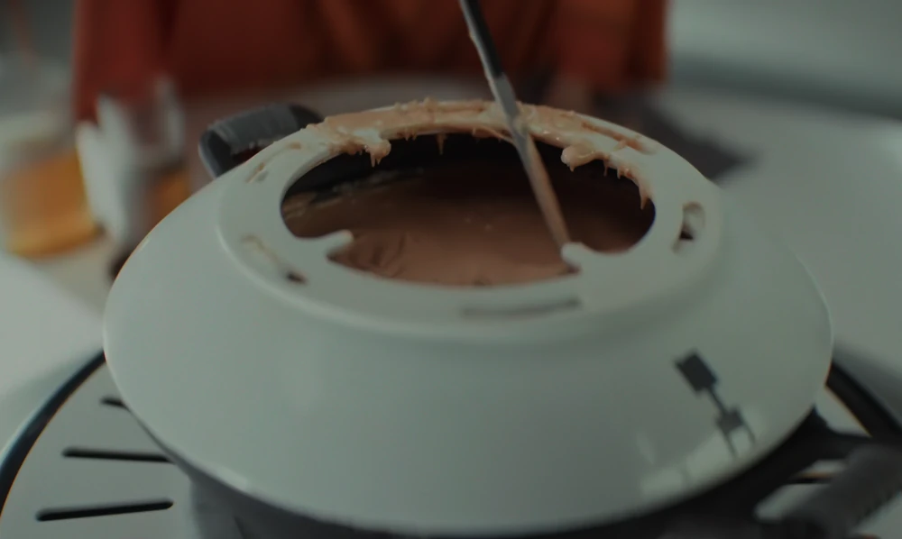
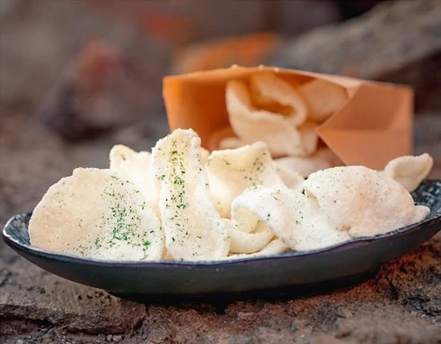
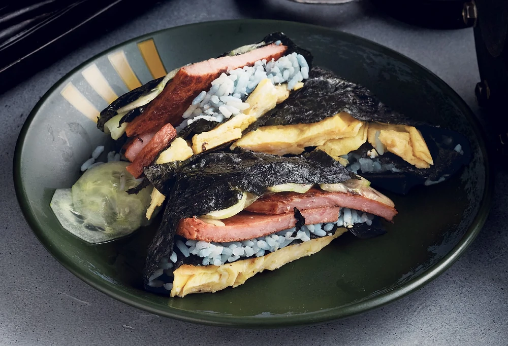
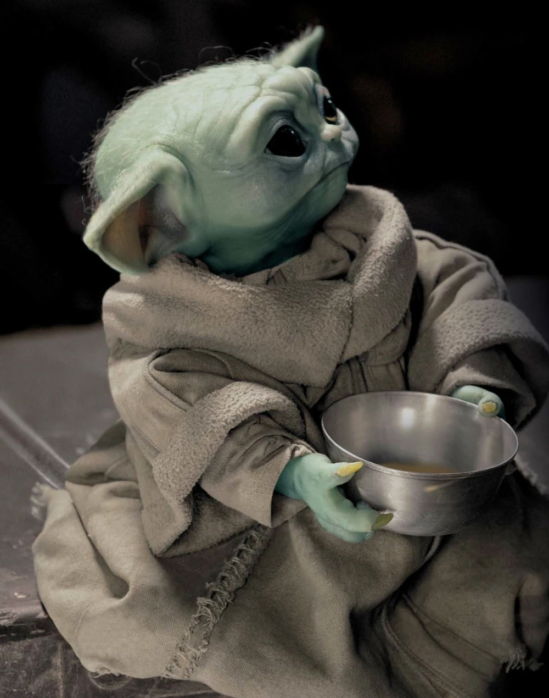
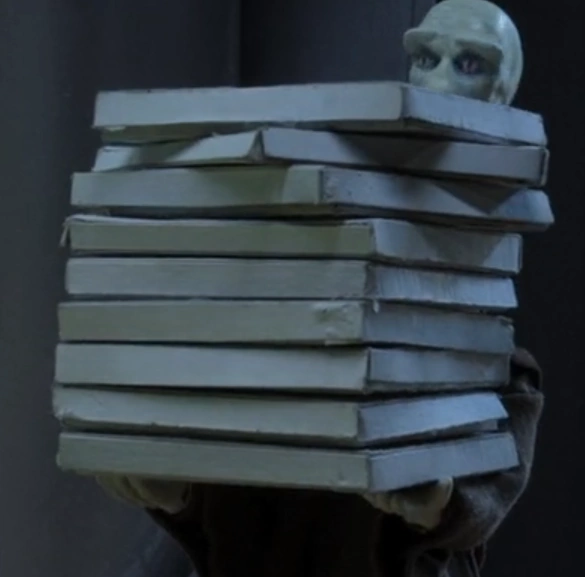
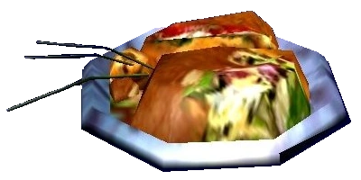
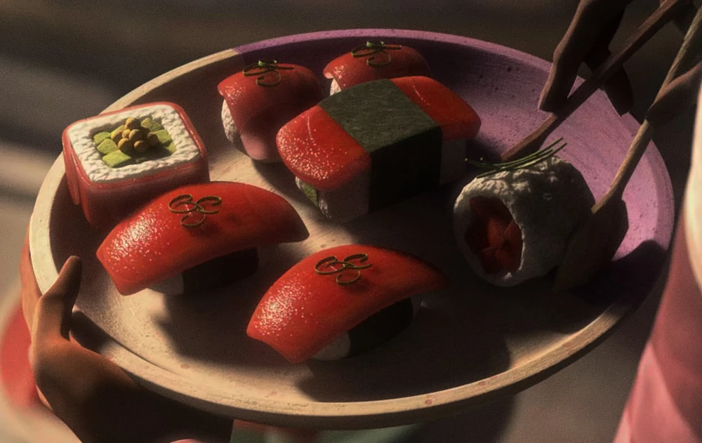

Lunch & Dinner
Meals
Fondue
Fondue

25ᖬ"I was just asking you if you wanted more sauce." ―Syril Karn to his mother Eedy Karn
1,200 calories
Porg
Porg
"They're from Ahch-To. Luke called them porgs. They're adorable." ―Rey, to Poe Dameron
900 calories
Garlic Chips
Garlic Chips

6ᖬ"Garlic chips are a popular snack on the planet Dantooine. They're made by slicing garlic into thin pieces and frying them until they're nice and crispy" ― Strono Tuggs, The Ultimate Cookbook"
400 calories
Byblos Square
Byblos Square

9ᖬ"When you're a smuggler on the run, you gotta get your hands on food that's easy to run with. Maybe that's why this little folded phenomenon is all the rage on the streets of Byblos. It's practically a full meal—eggs, meat, grains, and veg—all packed into the perfect portable parcel. This is one tantalizin' treat you're gonna wanna smuggle with you to every world you visit." ―Strono Tuggs, The Ultimate Cookbook
650 calories
Ice Cone
Ice Cone
"Fine. But at least bring me back an ice cone. No, no, no. M-Make it two." ― Wrecker, to Hunter
350 calories
Soup
Soup

5ᖬ"I've visited a lot of worlds in my travels, and I ain't found one sentient species that didn't have some sort of soup or stew as a part of their diet. Might be 'cause they're some of the easiest dishes to cook. All you need is a pot, some water, and somethin' to flavor it with." ― Strono Tuggs, The Official Black Spire Outpost Cookbook
300 calories
Pizza
Pizza

12ᖬ"Getting pizza, Yarael Poof should do. All in favor?" "Aye!" ― Yoda and the rest of the Jedi High Council, except for Yarael Poof
800 calories
Protato
Protato

10ᖬ"And the food. That I crave." "Oh, yeah?" "Handmade dumplings stuffed with protato and cushnip." ― Tulakt and Cal Kesti
600 calories
Sushi
Sushi

10ᖬ"I brought dinner." ― Anakin Skywalker to Padmé Amidala
500 calories
Gorg on a Stick
Gorg on a Stick
"Today's broadcast is brought to you in part by gorg on a stick. Now arranged by the dozen in lovely bouquets. Nothing says loving like gorg on a stick! Available wherever fine meats are sold." ― L-X1 presenting arena sponsors
700 calories
Jogan Fruit Pie
Jogan Fruit Pie
"Well, today I guess we learned that tauntauns aren't always as sweet as Jogan fruit pie, but they sure do love to eat them." ― SF-R3
650 calories
Corn Clusters
Corn Clusters
"Here… take your reward… just add water, yes?" "Corn-clusters? I wouldn't let Unkar catch you handing out food on his patch." ― Bobbajo gives Rey corn-clusters
650 calories